class: center, middle, inverse # Temperature Update ### 12th February 2019 --- ##Temperature calibration - DPX shows strong dependence on temperature. This leads to: - incorrect measurement of ToT and therefore dose - broadening of the measured spectrum since every pixel behaves differently - noisy pixels when energy too low or high - Need convinent method to get rid of temperature dependence `\(\rightarrow\)` Calibration! - Need to set THL for which: - V_ThA does not reach noise level - no jumps of V_ThA due to the sawtooth-nature of the voltage occur - Disadvantage: sensitivity for low energy photons is lost - Idea: Measure ToT as a function of the temperature and adjust accordingly --- ## ToT Measurements - DPX-Board is warmed using resistor heating - For a quasi-constant temperature, generate multiple test pulses for a single pixel column and measure the mean ToT values for each pixel - Perform described measurement for multiple temperatures - Mean ToT value varies linearly with the temperature But... <p style="text-align:center;">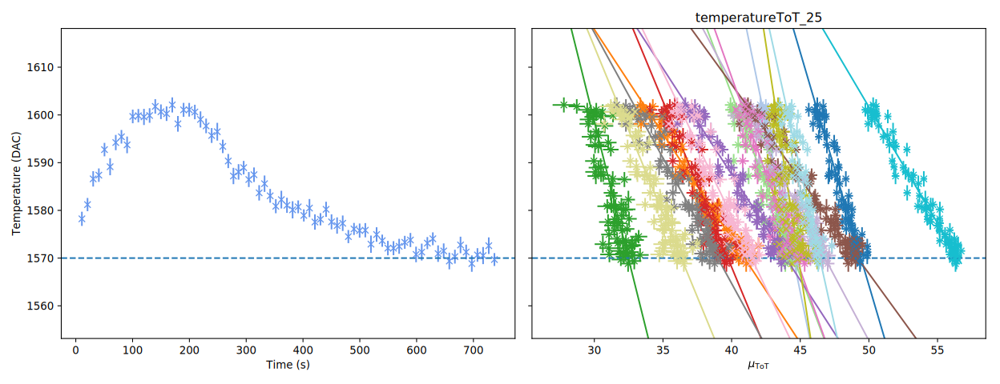</p> --- ## ToT Measurements (Part 2) Slope changes drastically with the test pulse energy (and therefore mean ToT)! - Need to also perform measurements for different mean ToT values - Later, want to find function to transform measured ToT value and temperature to ToT value at a certain temperature `\(T_\mathrm{norm}\)` (here: 1570 ADC, indicated by blue dashed line) - Describe each linear function for the pixels by two parameters: - Offset: point of intersection with `\(T_\mathrm{norm}\)` on `\(\mu_\mathrm{ToT}\)`-axis - Slope <p style="text-align:center;"><img src="images/temperatureToT_125.svg" alt="Temperature" width="800px" align="middle"/></p> --- ## Pixel parameters - Previously defined parameters seem to behave almost linear dependent - Clearly visible: the four small pixels in the column <p style="text-align:center;"><img src="images/ToT_fits.svg" alt="Temperature" width="600px" align="middle"/></p> --- ## ToT Correction Correct ToT values via `\(\Large{ \mathrm{ToT}_\mathrm{corr}(\mathrm{ToT},\, T) = -\frac{(T_\mathrm{norm} - T)t + \mathrm{ToT}}{(T_\mathrm{norm} - T)m - 1},} \)` with: - `\(t\)` - offset - `\(m\)` - slope --- ## High Temperature Test - Units are in DAC values - Put resistor heating directly on top of a detector and let it heat to about 80°C - Blue colors belong to small pixels: remaining stable, also for high temperatures - Some pixels start to get noisy, but not all of them! <p style="text-align:center;">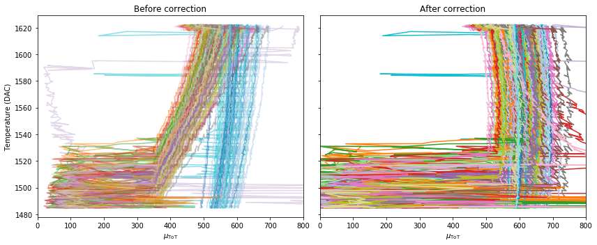</p> --- ## ToT Correction - Long-term measurement of Am241 while cooling down - Measured ToT values of most pixels increase - Energy dependence shows since the higher the energy the greater the shift <p style="text-align:center;">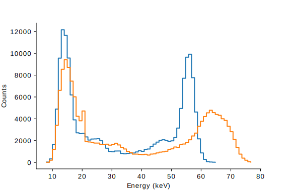</p> --- ## alphaPoly - Describe conversion factors via functions (one for each detector independently) - Choose polynomial function of degree `\(n\)` $$ \alpha(k) = \sum_{i=0}^n \alpha_i k^i $$ where `\(k \in [0, 15]\)` is used for later discretization - Number of degrees of freedom is reduced to `\(3(n + 1)\)` - Conversion factors do not change abruptly between neighbouring bins --- ## alphaPoly Conversion Factors - Set bin edges of DosiMode as usual - Evaluate polynomial at mean energies of the bins and calculate dose like always - Plot shows comparison of standard and alphaPoly conversion factors <p style="text-align:center;">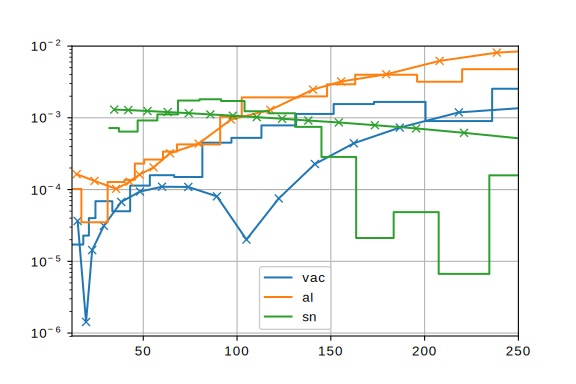</p> --- ## alphaPoly Comparison Left: standard conversion factors Right polynomial conversion factors <p style="text-align:center;">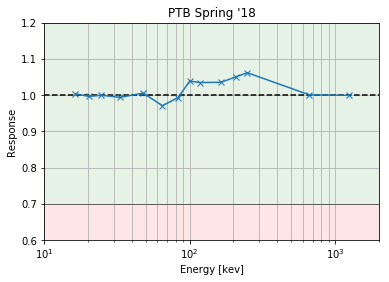 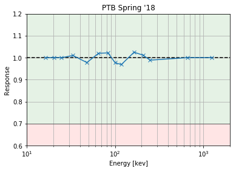</p> --- ## Dose Correction - Easy to correct ToT values but dose data is stored in a histogram of 16 bins - Unable to apply ToT shift to bin edges: - shape of the distribution is unknown: counts will wander from one bin to the other when temperature is changed - histogram is discrete and consisting of different sized bins. If temperature shift takes place, jumps in the dose might take place - Leave dose histogram as is and shift alphaPoly factors instead! `\(\rightarrow\)` continuous function! --- ## MC Generation - Generate random Gaussian distributed ToT-values with a specified mean and standard deviation - Data contains two peaks, one at the mean, one at the half of the mean - Additional background is provided via uniform distribution - ToT values are binned using the standard bin edges of DosiMode <p style="text-align:center;"> 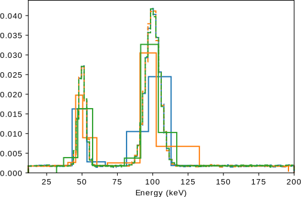 <img src="images/MC/reco_example_mean_100_sigma_30.svg" alt="reco_example_30" height="300px" align="middle"/> </p> --- ## MC Correction - Calculate dose of binned events - Assumption: measured ToT shift of a pixel is valid - Set a temperature and apply ToT-shifts according to measurements - Scale y-axis of alphaPoly inversely to ToT-shift and recalculate dose and compare to initial dose <p style="text-align:center;"> 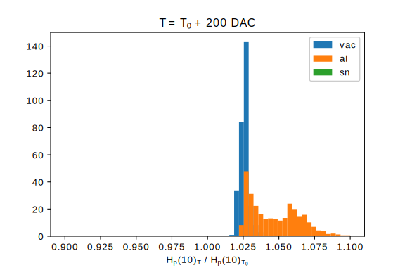 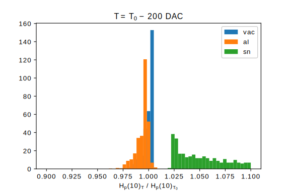 </p> --- ## MC Correction - Top: cool, Bottom: warm <p style="text-align:center;"> 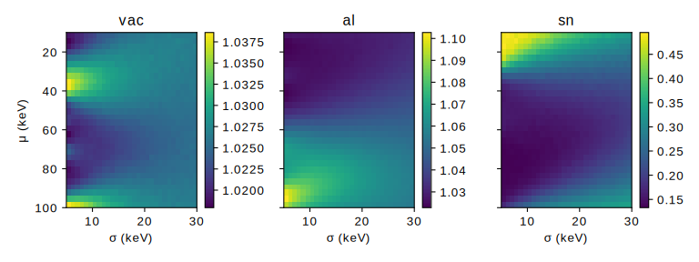 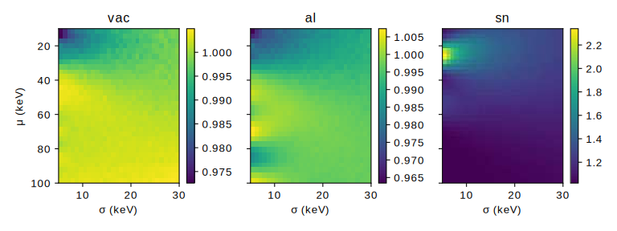 </p> --- ## Measurement: Heating - Am241 with thick PMMA layer in front - Resistor heating on top of Slot 1 - Plot shows trend of temperature over time (heated to ~80°, y-axis inverted) <p style="text-align:center;"> 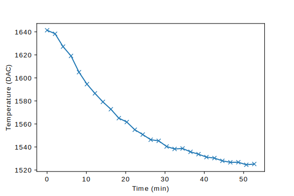 </p> --- ## Measurement (Heating): alphaPoly Correction - ToT values are shifted towards lower energies - Scale x-axis of alphaPoly-function inversely to correct dose <p style="text-align:center;"> <video width="600" controls autoplay> <source src="images/heating/pixel8.mp4" type="video/mp4"> </video> </p> --- ## Measurement (Heating): Dose Correction - Apply described procedure to correct dose for each measurement - Dose is normalized to mean value of corrected dose - Fluctuation is large, but framerate was only ~7.3 mHz `\(\rightarrow\)` Can be increased to ~1 Hz which leads to more precise measurement of temperature and therefore dose <p style="text-align:center;"> 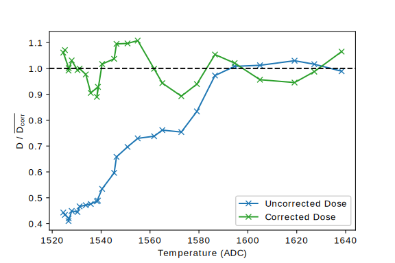 </p> --- ## Measurement: Cooling - Repeat measurement: same setup but now detector is cooled down in refrigerator - Important to wait until detector reaches thermodynamic equilibrium (housing and caps are isolating) - Afterwards, turn fridge off and start measurement - Approx. temperature range: -20°C to 20°C <p style="text-align:center;"> 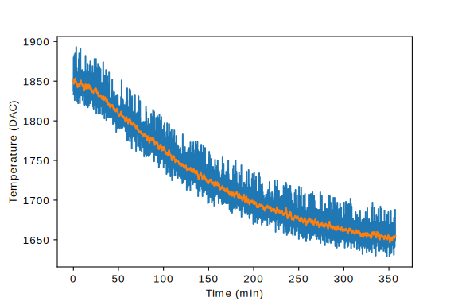 </p> --- ## Measurement (Cooling): Correction - Apply correction to each pixel and every detector - Compare standard and alphaPoly dose - First slot (vac) shows a large deviation starting at about frame 1500 <p style="text-align:center;"> 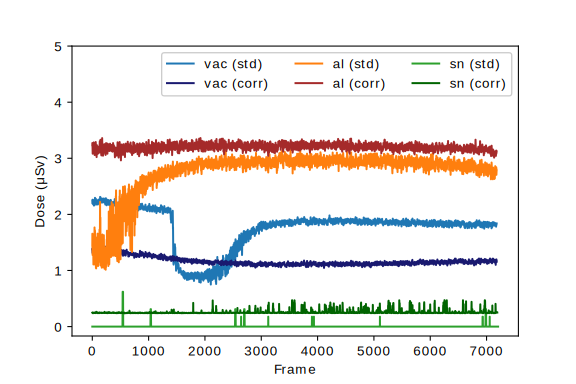 </p> --- ## Measurement (Cooling): alphaPoly Correction <p style="text-align:center;"> <video width="800" controls autoplay> <source src="images/cooldown/cooldown_all.mp4" type="video/mp4"> </video> </p> --- ## Measurement (Cooling): Vac Correction Measurement can be split into three regions: - Noise: too cold, so pixels start to get noisy `\(\rightarrow\)` try to apply `\(n\sigma\)`-filter to improve - Shift of full absorption peak: mean of peak wanders from one bin to next - Close to calibration temperature: dose remains almost stable <p style="text-align:center;"> 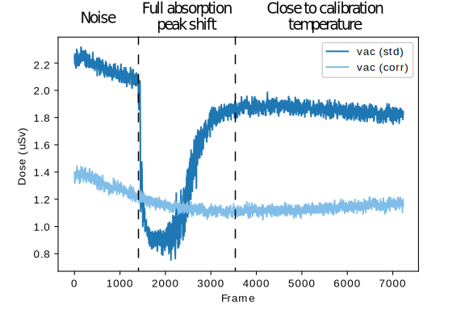 </p> --- ## Measurement (Cooling): Comparison of methods - Compare standard, alphaPoly and dose-corrected alphaPoly factors - Dose per slot and total dose, each normalized to corresponding mean value - Standard and alphaPoly method yield about the same results (shows agreement of both factor sets) - Large improvement of for temperature corrected alphaPoly dose <p style="text-align:center;"> 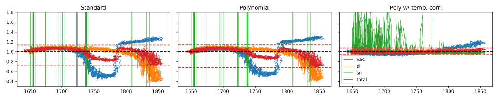 </p> --- ## Measurement (Cooling): Comparison of methods | | standard | alphaPoly | dose correction | |---|----------|-----------|-----------------| | Mean dose (uSv) | 4.53 +/- 0.42 | 3.99 +/- 0.34 | 4.61 +/ 0.08 | | Extrema (uSv) | (3.24, 5.13) | (2.71, 4.54) | (4.40, 4.98) | | Extrema norm. (uSv)| (0.72, 1.13) | (0.68, 1.14) | (0.95, 1.08) | <p style="text-align:center;"> </p> --- ## ToT vs. Energy Measurement - Apply resistor heating to detector and start heating - Assume temperature is constant for a measurement - Use test pulses (energy with arbitrary units) and measure ToT for different temperatures - There is an energy threshold for which warm and cold measurements intersect <p style="text-align:center;"> 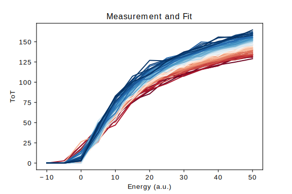 <img src="images/pulse_shape_meas/ToT_vs_energy_detail_pixel6.svg" alt="ToT_vs_energy_detail_pixel6" height="300px" align="middle"/> </p> --- ## ToT vs. Energy Pixels - Different pixels show different behaviour - Intersection takes place but may be not that obvious due to used THL value <p style="text-align:center;"> <img src="images/pulse_shape_meas/ToT_vs_energy_detail_pixel6.svg" alt="ToT_vs_energy_detail_pixel6" height="300px" align="middle"/> 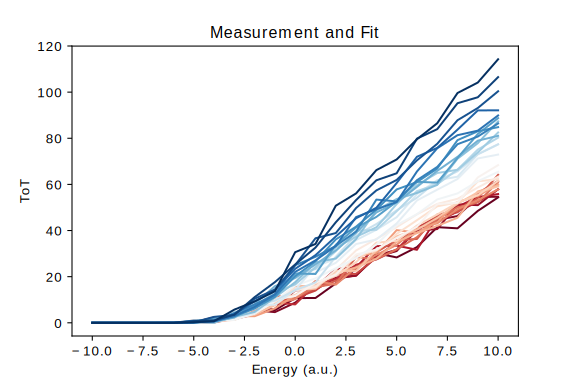 </p> --- ## ToT vs. Temperature Measurement - Cast horizontal lines of previous plots and get intersections - Yields previously shown plots of ToT vs. temperature <p style="text-align:center;"> 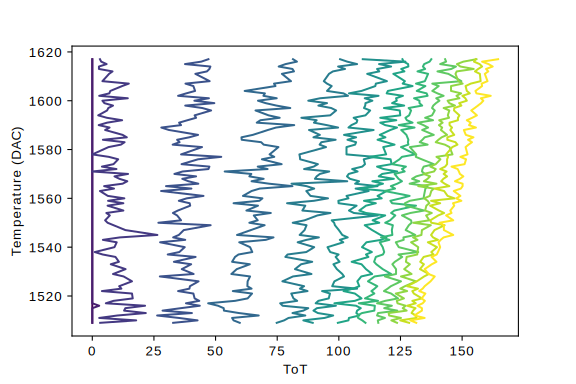 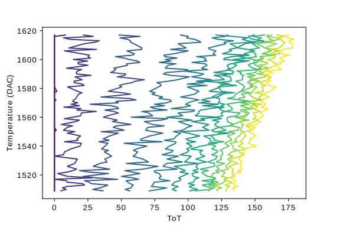 </p> --- ## Motiviation: MOSFET Temperature Dependence - Intersection of warm and cold lines shows that there exists an energy for which the behaviour of the circuitry changes - BJTs and MOSFETs show a similar temperature dependence `\(\rightarrow\)` There is a gate-source voltage for which the temperature coefficient is zero! <p style="text-align:center;"> 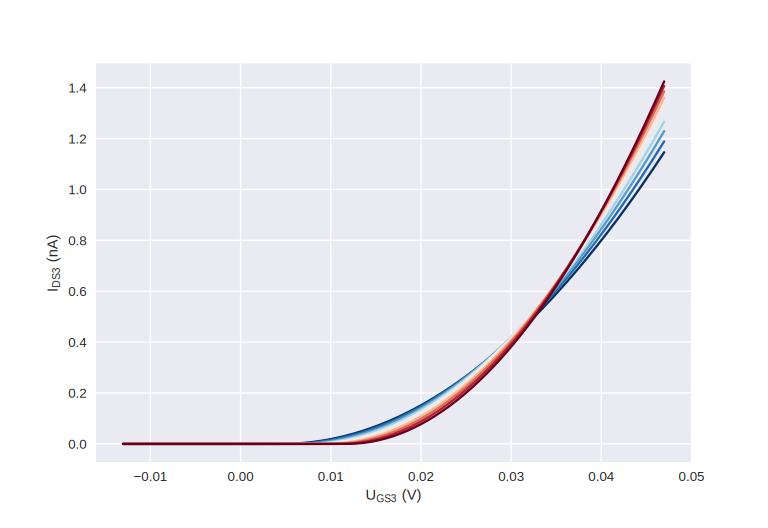 </p> --- ## Solution of CSA Circuit CSA = charge sensitive amplifier <p style="text-align:center;"> <img src="images/circuit.png" alt="circuit" height="500px" align="middle"/> </p> --- ## Pulse Shape Model Agreement - Solution is a first order ODE depending on 12 paramaters - Check agreement of model and reality by applying to data (simulations made by Winnie) <p style="text-align:center;"> 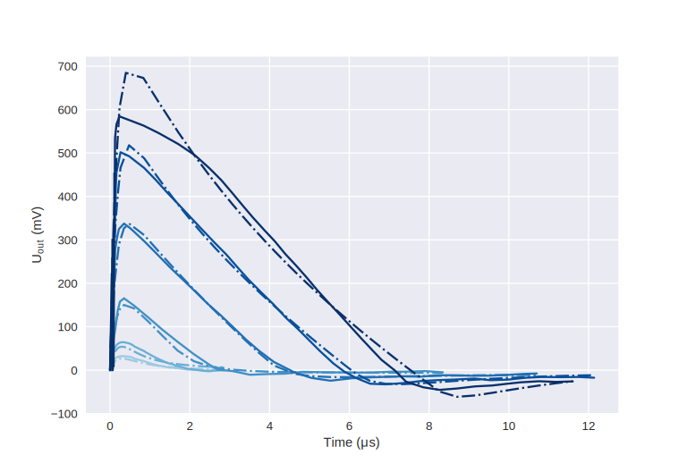 </p> --- ## Pulse Shape: ToT vs. Energy - Calculate shape of a pulse by solving ODE via RK4 - Set a threshold voltage and let it intersect with pulse in order to get corresponding ToT value <p style="text-align:center;"> 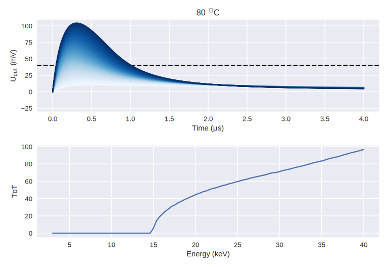 </p> --- ## Pulse Shape Model Agreement Pt. 2 Apply model to mean calibration curves of a detector `\(\rightarrow\)` still some mismatch, maybe due to amount of parameters <p style="text-align:center;"> 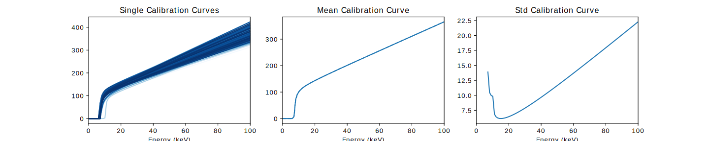 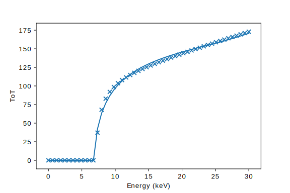 </p> --- ## Parameter Temperature Dependence - Tried to vary MOSFET parameters as a function of temperature to achieve behavior of warm and cold calibration line intersection - New approach: look at remaining parameters <p style="text-align:center;"> 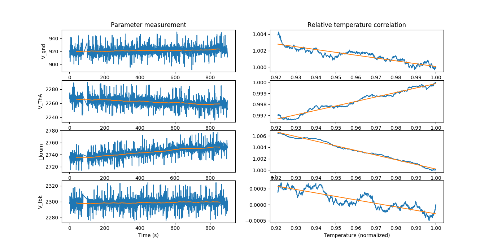 </p> --- ## Temperature: Uout vs. Time - Vary `\(I_\mathrm{krum}\)`, `\(U_\mathrm{fbk}\)` and `\(U_\mathrm{ThA}\)` at the same time - Again, calculate calibration curve for each temperature <p style="text-align:center;"> 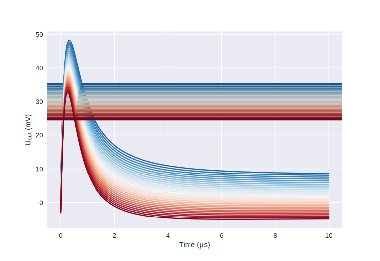 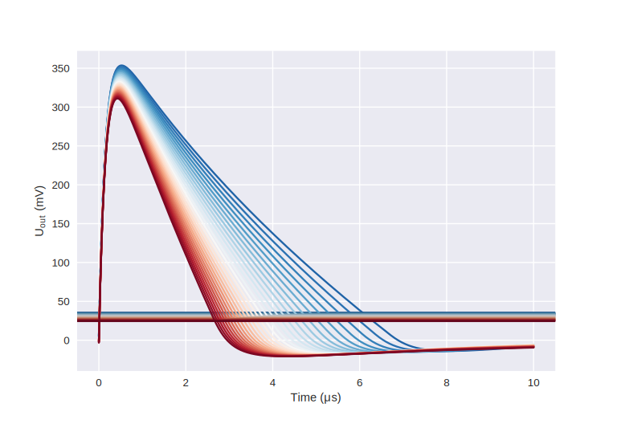 </p> --- ## Temperature: ToT vs. Energy - Shows similar behaviour like in measurement! - Indication of the problem but on proof <p style="text-align:center;"> 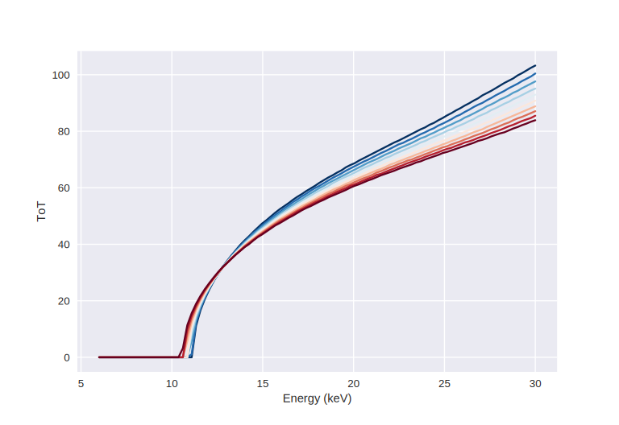 </p> --- ## Temperature vs. ToT <p style="text-align:center;"> 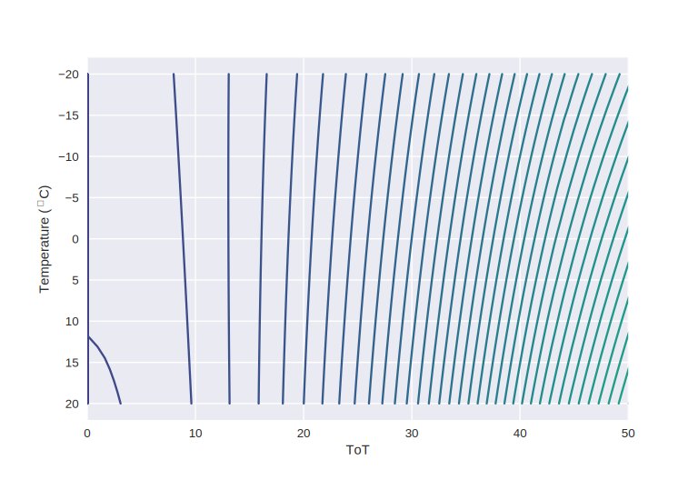 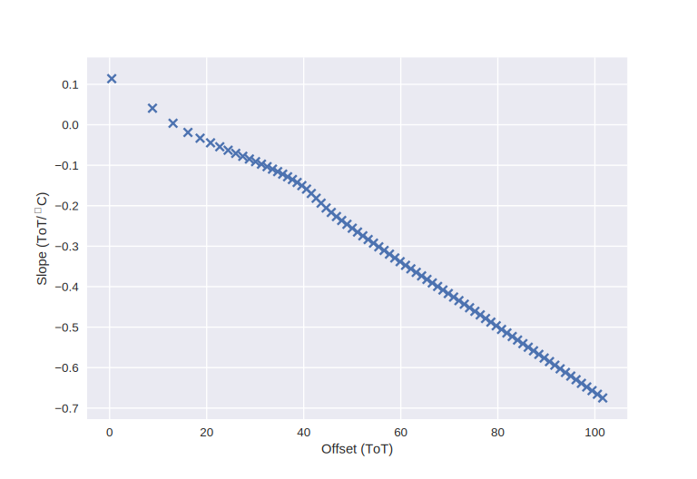 </p> --- ## Conclusion